library(pruatlas)
library(dplyr)
#>
#> Attaching package: 'dplyr'
#> The following objects are masked from 'package:stats':
#>
#> filter, lag
#> The following objects are masked from 'package:base':
#>
#> intersect, setdiff, setequal, union
library(sf)
#> Linking to GEOS 3.11.0, GDAL 3.5.3, PROJ 9.1.0; sf_use_s2() is TRUE
library(ggplot2)
library(stringr)
library(readr)
library(purrr)Single Country
FIR
Let’s plot Italian FIR at FL300
plot_country_fir("LI", "Italy", fl = 300)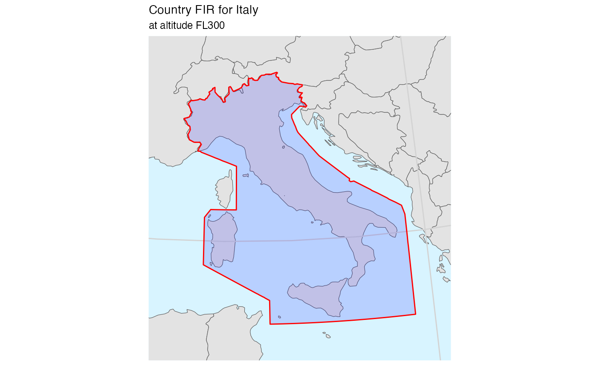
For UK, things are more complicated because it has also an Oceanic bit of volume
plot_country_fir("EG", "UK (oceanic)", fl = 200)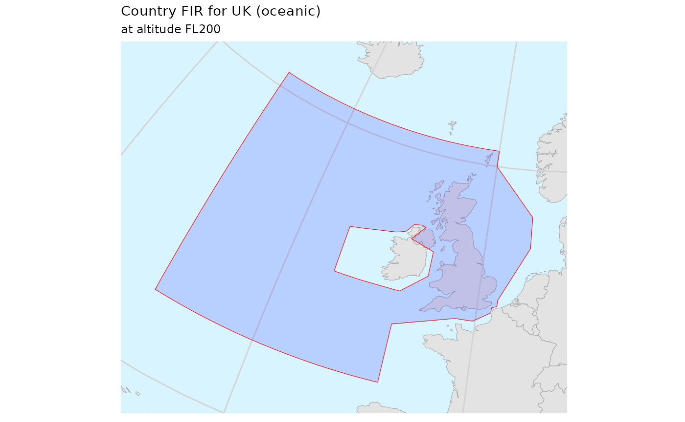
So to plot the continental part only we need to split things:
uk_continental <- firs_nm_406 %>%
dplyr::filter(icao == "EG", min_fl <= 0, 0 <= max_fl) %>%
dplyr::filter(!(id %in% c("EGGXFIR", "EGGX")))
plot_country_fir(
"EG",
"UK (continental)",
firs = uk_continental,
fl = 200)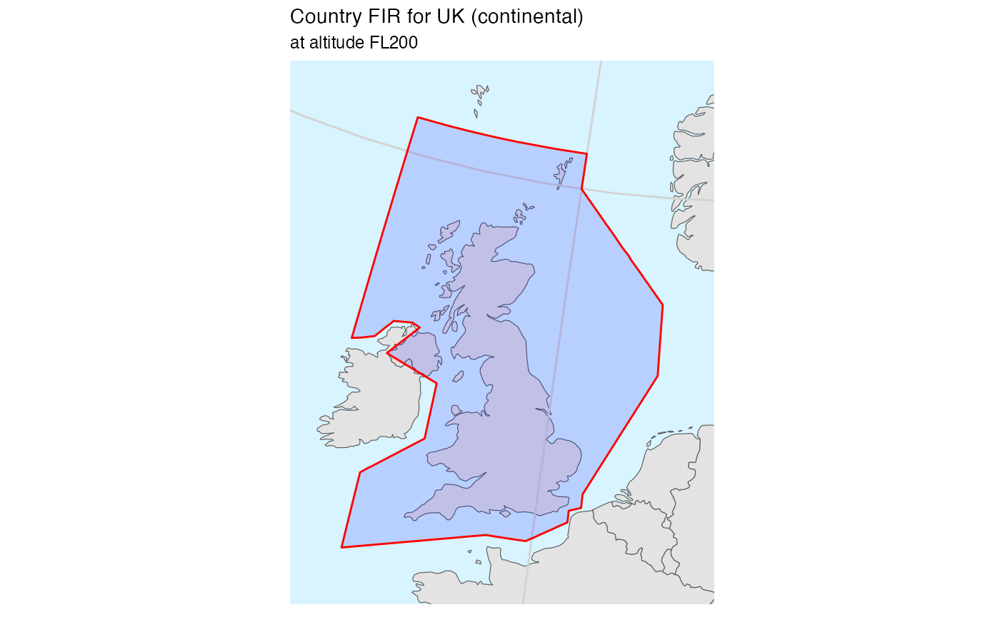
Aiport location in FIR
# some airports
apts <- tibble::tribble(
~ICAO_CODE, ~IATA_CODE, ~LON, ~LAT, ~NAME,
"EDDF", "FRA", 8.5706, 50.0333, "Frankfurt",
"EHAM", "AMS", 4.7642, 52.3080, "Amsterdam",
"LFPG", "CDG", 2.5478, 49.0097, "Paris/Charles-De-Gaulle",
"EGLL", "LHR", -0.46139, 51.4775, "London/Heathrow"
)
# transform to sf
apts_sf <- apts %>%
st_as_sf(coords = c("LON", "LAT"), crs = 4326)
# keep only EGLL
apt <- apts_sf %>%
filter(ICAO_CODE == "EGLL")
# single country (FIR)
uk_continental <- firs_nm_406 %>%
dplyr::filter(icao == "EG", min_fl <= 0, 0 <= max_fl) %>%
dplyr::filter(!(id %in% c("EGGXFIR", "EGGX")))
bbox <- uk_continental %>%
st_transform(crs = sf::st_crs(3035)) %>%
st_bbox()
plot_country_fir(
"EG",
"UK (continental)",
firs = uk_continental,
fl = 200) +
ggplot2::geom_sf(
data = apt,
shape = 10,
size = 3) +
ggplot2::geom_sf_text(
data = apt,
aes(label = ICAO_CODE),
vjust = -0.5) +
# (re-)zoom to the correct bounding box
ggplot2::coord_sf(xlim = bbox[c(1, 3)], ylim = bbox[c(2, 4)]) +
# (re-)define the title and subtitle (`plot_country_fir()` adds its own)
ggtitle(label = str_glue("{name} ({icao})", name = apt$NAME, icao = apt$ICAO_CODE),
subtitle = "United Kingdom FIR (continental) at FL200")
#> Coordinate system already present. Adding new coordinate system, which will
#> replace the existing one.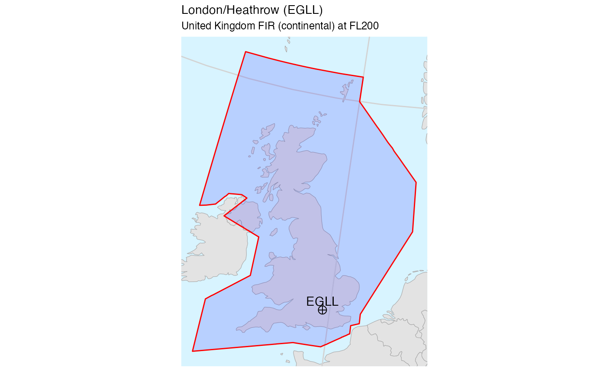
EUROCONTROL
Merged Member States FIRs
For plotting EUROCONTROL Member States’ FIR area we can select and merge the various airspaces:
plot_country_fir(icao_id = "E.|L.|UD|UG|GM|UK|GC",
"EUROCONTROL",
buffer = 350,
fl = 200)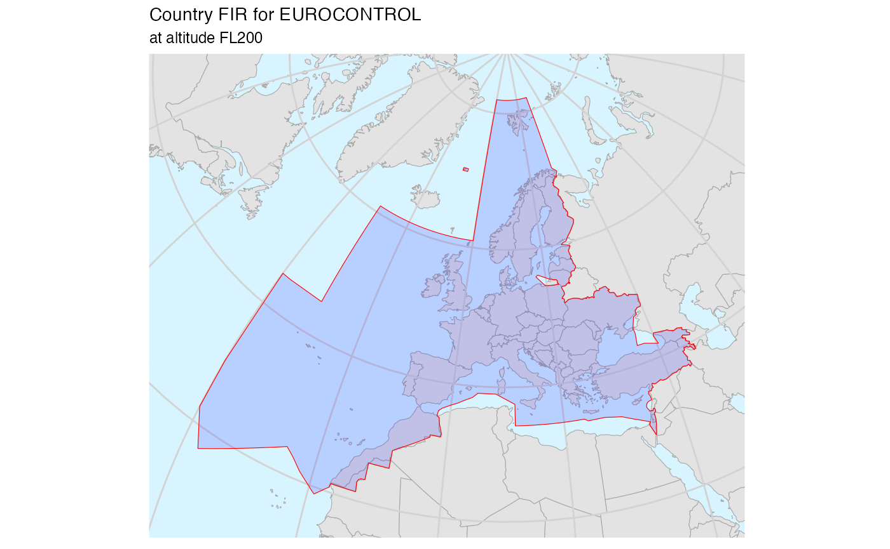
All Member States FIRs
ms_codes <- member_states %>%
# filter out Germany (military, no specific FIR),
# Luxembourg (managed by Belgium) and Monaco (managed by France)
filter(!icao %in% c("ET", "EL", "LN")) %>%
distinct(icao) %>%
pull(icao)
ms_firs <- ms_codes %>%
purrr::map_dfr(~ suppressMessages(
country_fir(pruatlas::firs_nm_406, icao_id = .x))) %>%
mutate(id = str_sub(id, 1, 2)) %>%
left_join(member_states %>%
filter(!icao %in% c("ET", "EL", "LN")) %>%
distinct(icao, .keep_all = TRUE),
by = c("id" = "icao")) %>%
mutate(
name = case_when(
id == "EB" ~ "Belgium and Luxemburg",
id == "LF" ~ "France and Monaco",
id == "LY" ~ "Serbia and Montenegro",
id == "EG" ~ "United Kingdom",
TRUE ~ name),
icao = id,
min_fl = 200,
max_fl = 200)
plot_country_fir(firs = ms_firs,
icao_id = ms_codes,
fl = 200,
name = "EUROCONTROL",
merge = FALSE)
CRCO Charging Zones
You can get the CRCO charging zones boundaries from EUROCONTROL web site. This package stores a real file as an example.
bo <- system.file("extdata", "sbm_bz_20200527.txt", package = "pruatlas")
crco <- readr::read_lines(bo) %>%
parse_airspace_crco() %>%
mutate(icao = unit)
codes <- crco %>% pull(icao) %>% unique()
# country_fir(firs = crco,
# icao_id = "E.|L.|UD|UG|GM|UK|GC",
# fl = 200, merge = FALSE)
#
# ggplot(crco) + geom_sf()
plot_country_fir(firs = crco,
fl = 200,
icao_id = codes,
name = "CRCO charging zones",
merge = FALSE)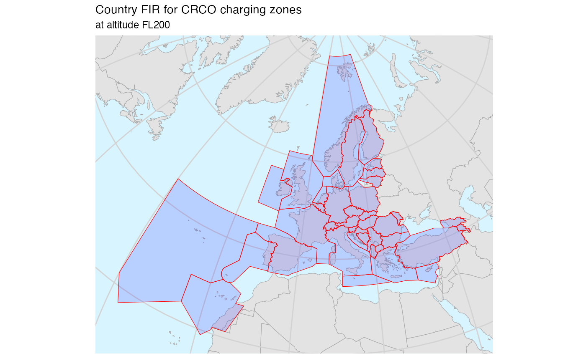
STATFOR Areas
ECAC Oceanic
ecac_oceanic() %>%
plot_country_fir(icao_id = "ECOC",
name = "ECAC Oceanic",
firs = .)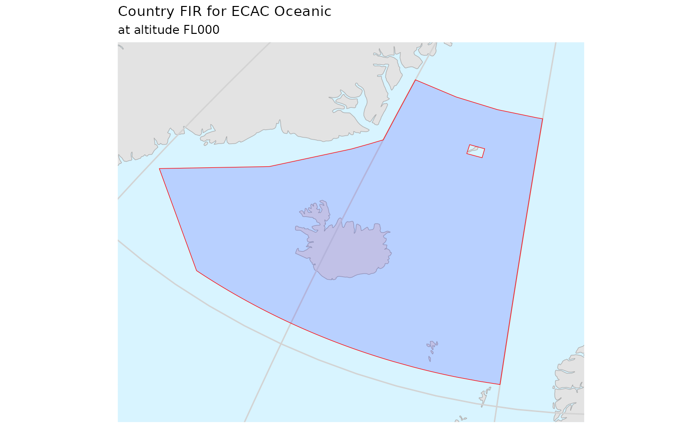
ECAC North West
ecac_northwest() %>%
plot_country_fir(icao_id = "ECNW",
name = "ECAC North West",
firs = .)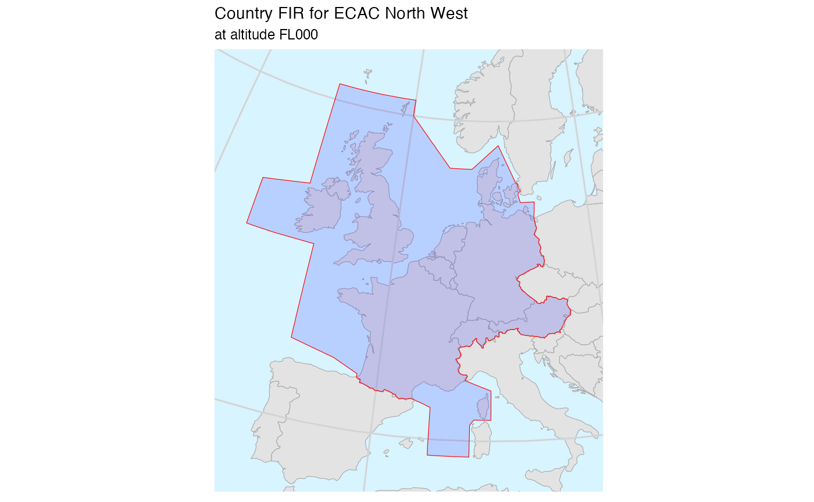
ECAC South West
ecac_southwest() %>%
plot_country_fir(icao_id = "ECSW",
name = "ECAC South West",
firs = .)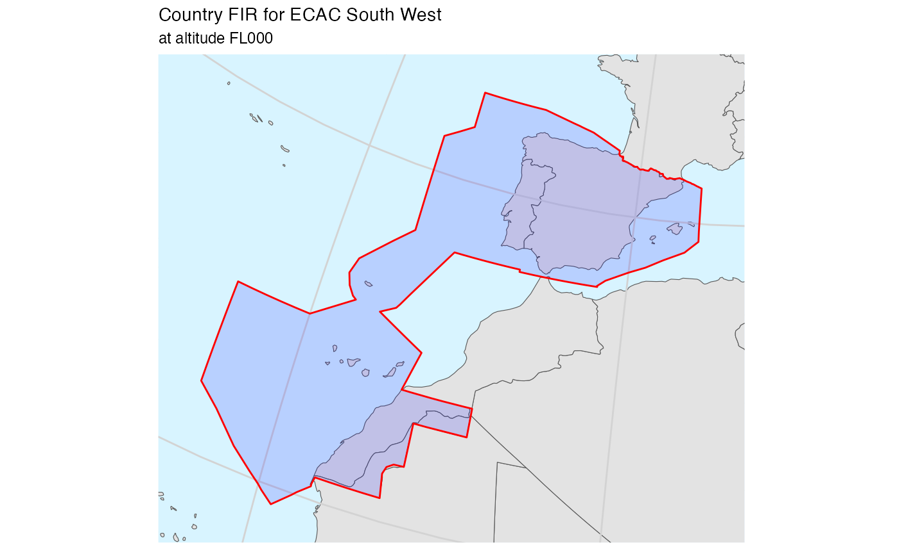
ECAC North East
ecac_northeast() %>%
plot_country_fir(icao_id = "ECNE",
name = "ECAC North East",
firs = .)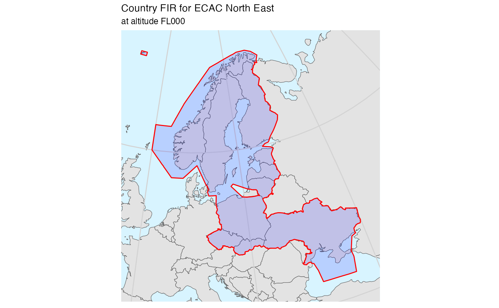
ECAC South East
ecac_southeast() %>%
plot_country_fir(icao_id = "ECSE",
name = "ECAC South East",
firs = .)
North Atlantic
st_segmentize improved things but THIS IS still BAD!
firs <- system.file("extdata", "icao_firs.geojson", package = "pruatlas") %>%
read_sf() %>%
rename(icao = icao_code)
north_atlantic() %>%
sf::st_segmentize(dfMaxLength = units::set_units(50, km)) %>%
plot_country_fir(icao_id = "NOAT",
name = "STATFOR North Atlantic",
firs = .)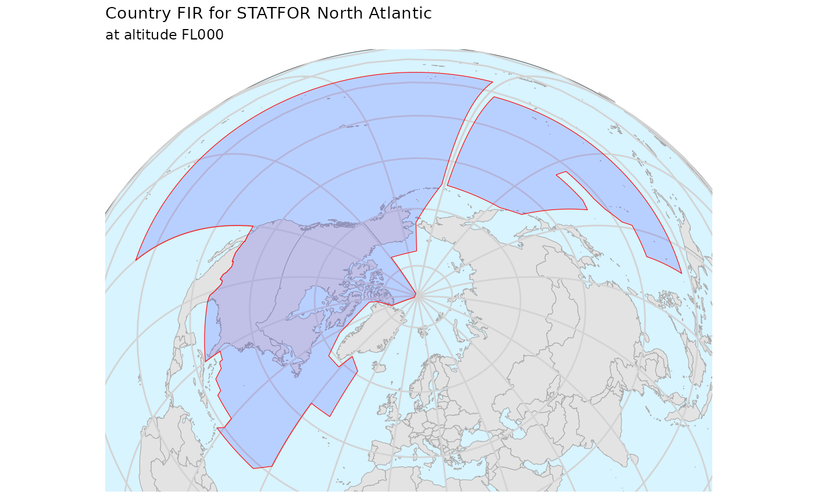